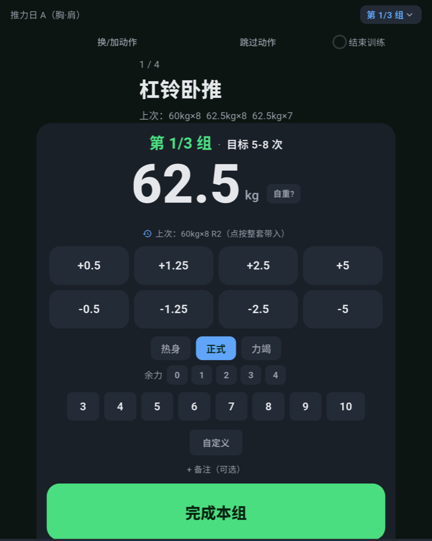
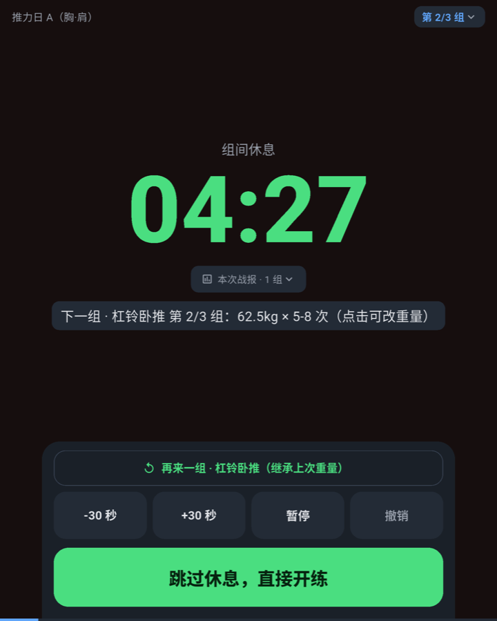
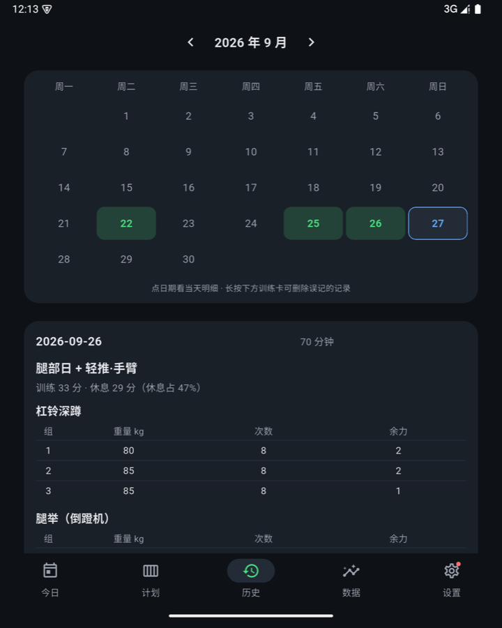
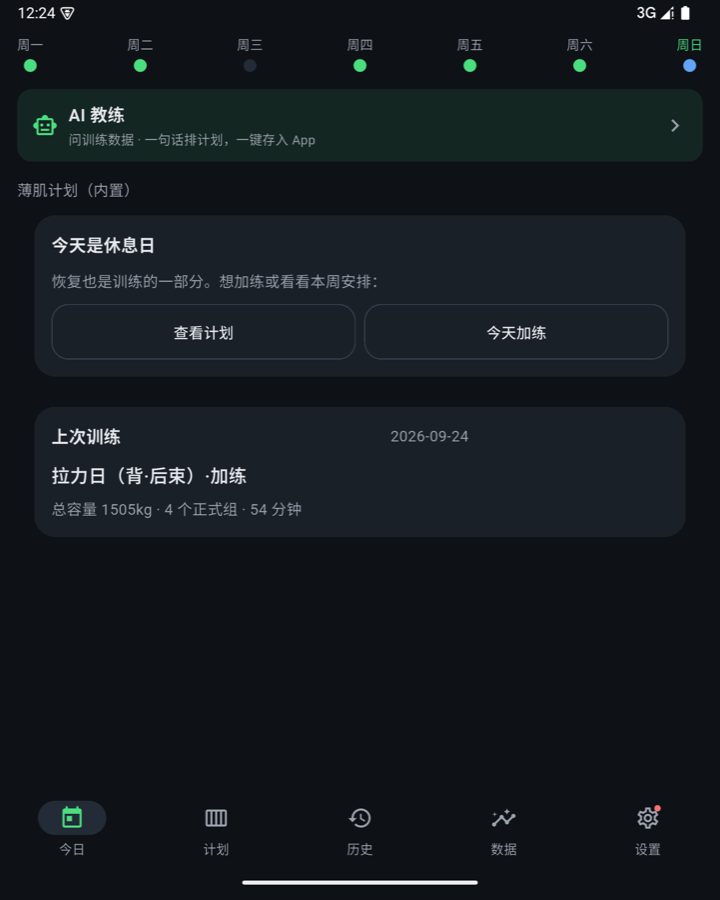
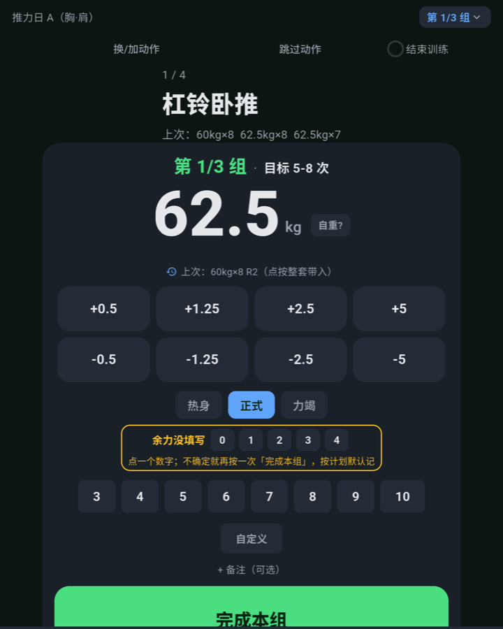
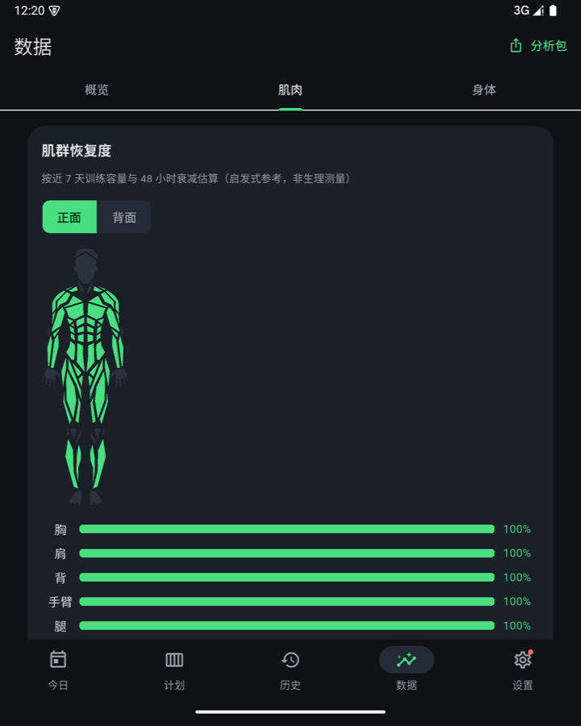

A strength training timer & log that runs entirely on your phone
No server · Data never leaves the device · Chinese & English · Minimal & distraction-free
Android 8.0+ · Free & open source · No ads · No accounts
The hard part of training is logging consistently and staying focused mid-set. Other apps want your sign-up or your server — LeanLift keeps everything on your phone.
Works out of the box. Nothing to host, no sign-up, no pop-ups.
Training data lives in local SQLite. No cloud, no one else's database; export and import are yours.
The training screen shows three things only: current exercise, set target, countdown. Haptics confirm each set.
The UI and all 157 exercise guides come in Chinese and English, following the system or switched manually.
| LeanLift | Cloud / self-hosted | |
|---|---|---|
| Server | None | Yours or someone else's |
| Data ownership | 100% on-device | Someone else's database |
| Accounts | None | Registration systems |
| Offline | Everything works | Core features need network |
| Cost | Free & open source | Subscriptions / server bills |
Only three optional touchpoints ever use the network: calendar sync, AI features (your key), update checks.
Inspired by Alan Shao's lean-theory: low body fat, training 3× a week, progressive overload — turned into plain, handy tools.
Full-screen set logging, automatic rest countdowns that survive lock screens, PR detection, a forgot-to-stop guard, plate math.
Automatic add/back-off calls, per-set target snapshots, target-vs-actual history, 1RM estimates and weekly/monthly trends.
157 exercises with bilingual form cues, 145 with start/end photos, 14 core lifts with silent demo videos — readable mid-workout.
Bring your own API key: conversational plan building, phase reviews, Q&A with your last 8 weeks of real data. OpenAI-compatible, Ollama works.
Weekly/monthly volume·sets·intensity, upper/lower split, muscle heatmaps, workout impressions, body metrics, full CSV/JSON export.
Training days on your calendar, summaries backfilled after sessions, offline queue — straight to the official API.






Android 8.0+ · Overwrite-installing keeps your data · In-app one-tap updates (one-time authorization)
iPhone users: Android-only officially; see the AI-BUILD-GUIDE to adapt it yourself.
Yes. Training, logging, analytics and plans run locally. The three networked extras (calendar, AI, update checks) are all optional.
Local SQLite on your phone. Settings offers full JSON export/restore and CSV export — copy the archive to move devices.
Only when you actively use an AI feature, and only the needed content (e.g. an 8-week summary) goes directly to the provider you configured. Keys stay on-device; there is no middleman server.
Settings → App Update, one tap. Or download the latest APK from this page and overwrite-install — data survives.
Nothing. MIT open source, no ads, no in-app purchases, no analytics.